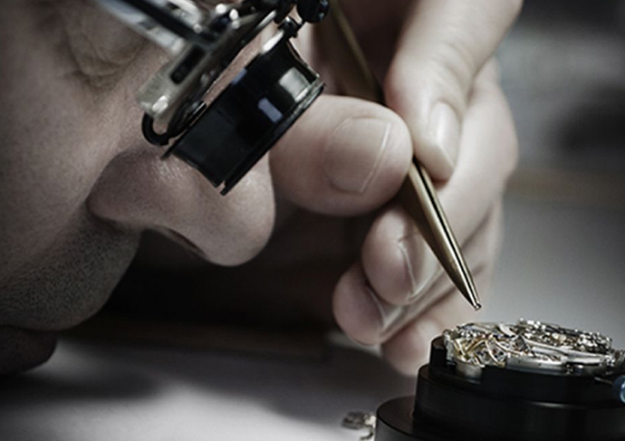
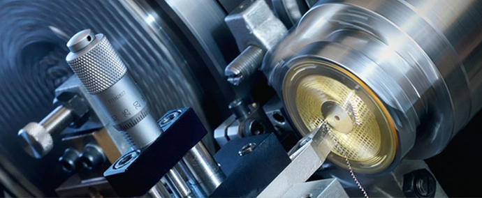

选择GOLDEN CODE古昆金表的十大理由
2016-10-10GOLDEN CODE古昆金表是建侨珠宝旗下的高端腕表品牌，拥有新产品开发和设计团队让我们能够掌控自身的命运，始终着眼我们的长远目标。公司拥有完全自由的创意空间，这有助于我们根据自己的品质标准自主研发制造精美黄金腕表，同时确保我们制造的黄金腕表在方方面面都反映出我们追求高品质和优质服务的精神。高品质和优质服务可以确保我们的产品秉承传统、性能可靠、值得信赖。▲GOLDEN CODE古昆金表-中国黄金腕表专家
GOLDEN CODE古昆依托建侨珠宝二十多年的技艺沉淀与钻研，致力于黄金腕表的设计、生产与销售，产品既从世界钟表之林中汲取深层技艺，又融汇黄金制作工艺与创意设计。这是一段充满独特传承的品牌故事，融合了我们丰富的制表经验、精巧设计和火热的工作热情，确保这些理念原则与工艺技术薪火相传、发扬光大。时至今日，我们的制表工匠依然秉承悠久的工艺传统，日复一日，坚持以古老的精湛手艺、精准的锐利目光和灵巧的敏锐触觉，奠定了生产高档黄金腕表的基础。
我们珍视传统，同时放眼未来，GOLDEN CODE古昆金表借其在创新研发，精湛的工艺，不断推动制表艺术迈向新的高峰。我们倾力打造的古昆金表印记同样旨在与时俱进。这一品质标准涵盖了制表行业今后的技术进步与未来发展，从而致力于提高时计的机械功能、长期稳定以及精确走时。
GOLDEN CODE古昆金表创办之初，便怀着同一个目标：立志开发、打造高品质优秀的黄金腕表作品。时至今日，“高品质”和“优质服务”依然是古昆金表各个生产环节严格奉行的准则。不论是机芯还是外部元件，不论是技术还是美学因素，不论是时计的每项功能还是走时精度，都能达到高品质黄金腕表领先地位。